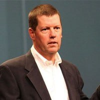

Reasoning Engine
Interprets live operational signals, constraints, context, and memory.
Know what is happening. Decide while it still matters.
01Not another database.
02Not another integration platform.
03Not another data lake.
A real-timeunderstandingof enterpriseoperations.
Interprets live operational signals, constraints, context, and memory.
Resolves intelligence into ranked, explainable decisions in real time.
Returns decisions to the systems and operators that move the business.
Decades building real-time nervous systems for consequential operations.
Air travel · Logistics · Shipping · Retail · Wall Street
Operational knowledge · Real-time systems · Agentic decision platforms
Cerniam represents more than thirty years of work by architects, operators, engineers, programmers, customers, and collaborators. Van Oleson is its founder and present steward, carrying that collective lineage into an Open Source Operational Knowledge Graph and agentic decision platform.
The foundation reaches back to Delta Air Lines and Georgia Tech, where work on Operational Information Systems addressed large-scale airline operations. Across airlines, retail, enterprise platforms, and agentic AI, many contributors shaped the architecture Cerniam brings together today.
 Founder / Steward
Founder / StewardContributors / thirty-year foundation
A representative field. Individual names and contributions will be added as the historical record is verified.
Operators and platform builders who have shaped commerce, network computing, and the real-time data infrastructure beneath modern enterprise systems.
 Customer / Commerce
Customer / CommerceCustomer, commerce & digital transformation
Chris Rupp brings leadership experience across Amazon, Microsoft, Albertsons, Victoria’s Secret, and Canadian Tire. Her career spans customer experience, Prime and marketplace operations, digital commerce, fulfillment, loyalty, data, and enterprise-scale retail transformation.

Enterprise PlatformsNetwork computing & enterprise platforms
Scott McNealy co-founded Sun Microsystems and served as its longtime CEO, helping define the era of network computing, open systems, infrastructure, and enterprise platforms. He brings decades of experience building and scaling consequential technology companies.
 Systems Engineering
Systems EngineeringDistributed systems, event streaming & enterprise systems engineering
Hans Jespersen is a veteran systems-engineering leader whose career spans Sun Microsystems, Yahoo, eBay, TIBCO, Solace, and Confluent. He brings deep experience in large-scale distributed systems, event-driven architecture, streaming infrastructure, and enterprise adoption of mission-critical data platforms.
Specialist and operating advisors will appear here as names, roles, and public biographies are confirmed. This register remains deliberately quieter so the founder and tier-one enterprise lineage land first.
Working preview · Living Architecture · July 2026
Atlas sits above the work. It registers what exists, binds each resource to its runtime and tenant context, watches health, exposes proof, and keeps authority boundaries visible—without becoming the path operational traffic must cross.
Maps · binds · monitors · reconciles · explains · proves